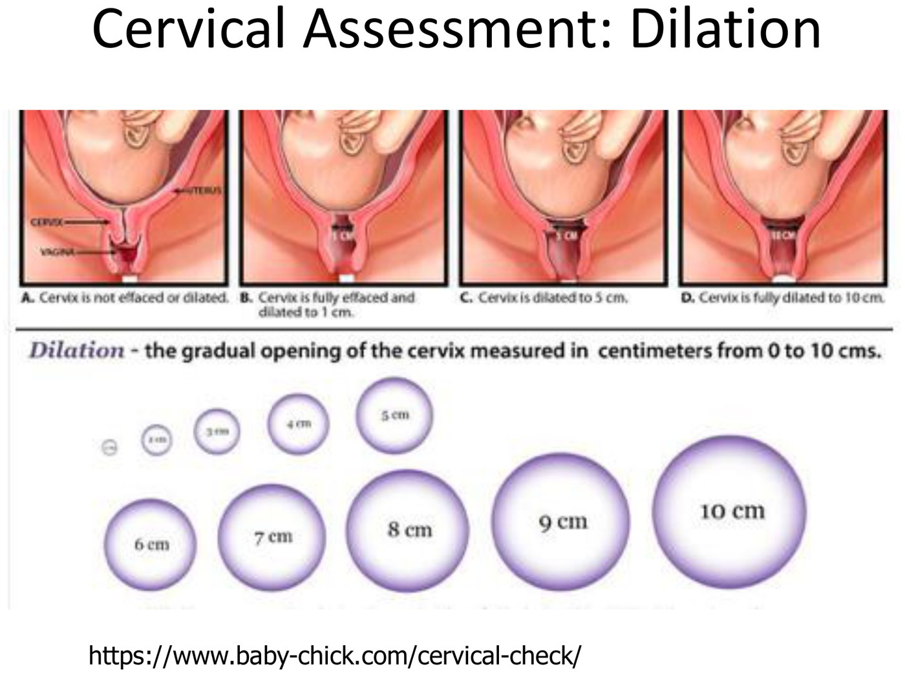
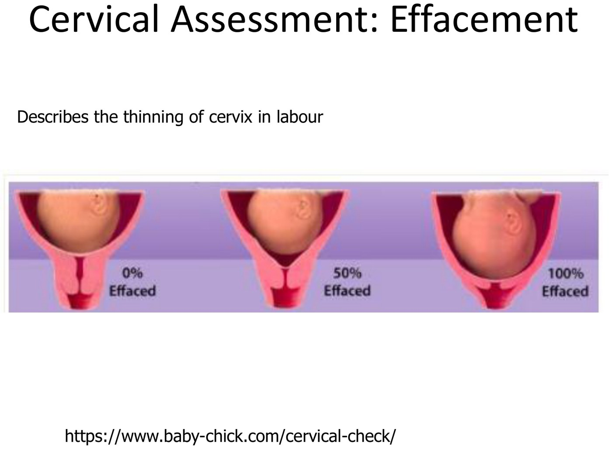
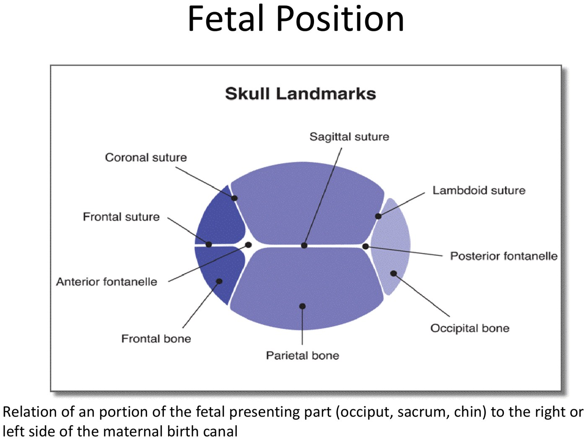
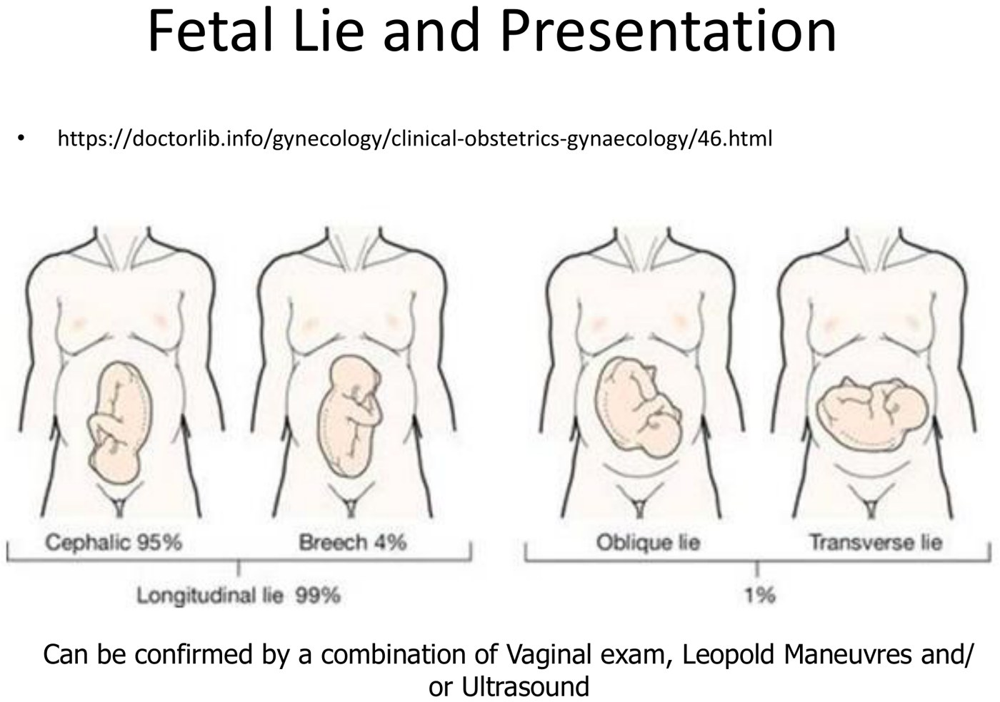
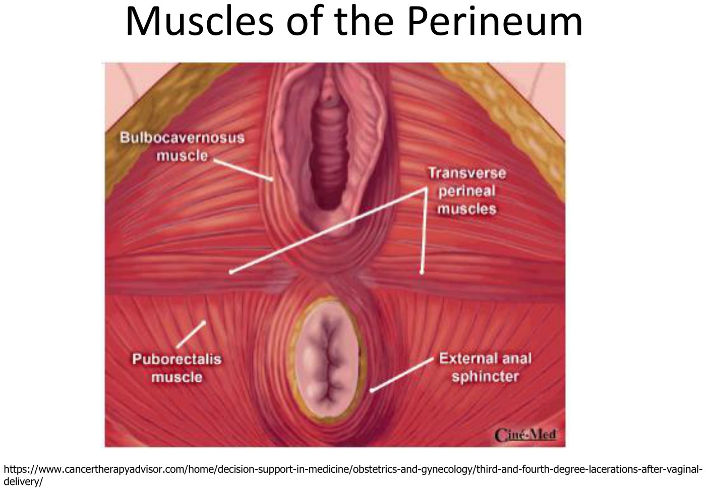

Process of Labour & Birth
- Labour = regular contractions causing progressive cervical change. Braxton Hicks contractions don't change the cervix.
- Four stages: 1st, onset to full dilatation (latent 0–4 cm, active 4–10 cm); 2nd, full dilatation to birth; 3rd, birth to placenta (2–30 min); 4th, the first hour.
- Fetal heart monitoring: intermittent (q15 min in stage 1, q5 min in stage 2) for low risk. Continuous for high risk, oxytocin and VBAC. Normal = baseline 110–160, variability 6–25, accelerations. Early = head compression, variable = cord, late = placental insufficiency.
- Intrauterine resuscitation: scalp clip, vaginal exam (cord prolapse?), left lateral, oxytocin off, O2, 500 mL bolus. Plan delivery if it persists.
- Cardinal movements: Engagement, Descent, Flexion, Internal rotation, Extension, External rotation, Expulsion.
- Active management of the third stage: uterotonic + gentle cord traction + fundal massage. Earliest sign of separation: the uterus becomes firm and globular.
- Labour & Birth, part 1 — stages, fetal monitoring & intrauterine resuscitation ▶11:09
- Labour & Birth, part 2 — the vaginal exam, cardinal movements, third stage & perineum ▶9:31
Learning Objectives
- Define labour.
- Review and define the stages of labour and birth.
- Contrast the different methods of fetal monitoring in labour.
- Define fetal lie and presentation.
- Describe Leopold's maneuvers.
- List the changes to the cervix associated with labour and birth.
- List maneuvers used for intrauterine resuscitation during labour.
- Define the cardinal movements during labour and birth.
- Describe the active management of the third stage of labour.
- Review perineal anatomy and common sites and structures that need repair after birth.
Dr. Laura Sovran, general obstetrics & gynecology, LHSC. One 35-minute recording; Elentra lists 36. The slides are adapted from Dr. T. Crumley. This is the normal version; what happens when labour stalls, needs help, or bleeds afterwards is in 6.5.
Who Shouldn't Labour
Before anything else, make sure labour is allowed. The same list rules out induction (6.5).
| Contraindication | Why |
|---|---|
| Placenta previa, vasa previa, cord presentation | Something other than the baby is in the way; labour means hemorrhage or cord compression (6.3) |
| Abnormal fetal lie (transverse) | A transverse baby can't come out vaginally |
| Prior classical caesarean, or uterine surgery entering the cavity | High risk of uterine rupture (6.5) |
| Active genital herpes | Transmission to the baby at vaginal birth |
How Labour Starts
Complex, not fully understood, and not needed in detail. If we understood it we could stop preterm labour (6.1).
| Driver | What changes at term |
|---|---|
| Oxytocin | Myometrial oxytocin receptors, quiet through pregnancy, are activated at term |
| Progesterone withdrawal | Progesterone is high all pregnancy; at term its effect falls relative to estrogen |
| Fetal triggers | The fetal adrenal and hypothalamic–pituitary axis |
| Prostaglandins | Especially PGF |
| Withdrawal of inhibitors | Progesterone, relaxin, prostacyclin, PTH-related peptide and nitric oxide (the slide reads “parathyroid hormone” and “nitric acid”) |
| Before labour | |
|---|---|
| Braxton Hicks contractions | Painless tightenings (sometimes uncomfortable), no cervical change. Start around 28 weeks and become more frequent toward term. |
| Cervical ripening | The cervix softens and thins, often without the woman noticing |
| Engagement | The head becomes fixed in the pelvis about 2 weeks before labour in a primip. This is the first cardinal movement. |
In labour, the muscle fibres shorten with each contraction and don't fully relax back. The uterus gets physically smaller and pushes the head down onto the cervix.
The Four Stages
| Stage | From → to | Primip | Multip |
|---|---|---|---|
| First | Onset of labour → full dilatation. Latent phase 0–4 cm; active phase 4–10 cm (more predictable change) | 6–18 h; active phase ≈ 1.2 cm/h | 2–10 h; active ≈ 1.5 cm/h |
| Second | Full dilatation → birth of the baby. Progress is tracked by station. | 30 min – 3 h | 5–30 min |
| Third | Birth of the baby → delivery of the placenta | 2–30 min | |
| Fourth | The first hour after birth | — | |

Fetal Heart Rate Monitoring
| Intermittent auscultation | Continuous electronic monitoring | |
|---|---|---|
| For | Low-risk labour | High risk (preeclampsia, bleeding, atypical or abnormal FHR) · induction or augmentation with oxytocin · VBAC |
| How | Listen every 15 min in stage 1 and every 5 min in stage 2 | External monitor, or a fetal scalp electrode (internal) screwed into the scalp when the external trace is poor or may be maternal |
| Note | In low-risk women: fewer operative vaginal deliveries, same fetal outcomes | Produces a tracing, classified normal, atypical or abnormal |
![SOGC table 15, classification of intrapartum EFM tracings, in three colour-coded columns. Normal: baseline 110 to 160, variability 6 to 25 or 5 or less for under 40 minutes, no or occasional uncomplicated variable or early decelerations, accelerations present. Atypical: baseline 100 to 110 or tachycardia over 160 for 30 to 80 minutes or rising, variability 5 or less for 40 to 80 minutes, repetitive uncomplicated variables, occasional lates, a single prolonged deceleration of 2 to 3 minutes, no acceleration with scalp stimulation. Abnormal: bradycardia under 100, tachycardia over 160 for more than 80 minutes, erratic baseline, variability 5 or less for more than 80 minutes or 25 or more for over 10 minutes or sinusoidal, repetitive complicated variables, lates with over 50 percent of contractions, a single prolonged deceleration of 3 to 10 minutes. Action row: normal, EFM may be interrupted up to 30 minutes; atypical, vigilant assessment; abnormal, action required, review, scalp pH, prepare for delivery.](../../../../assets/images/week-6/labour-and-birth/efm-classification.jpg)
| Feature | Normal | Worth knowing |
|---|---|---|
| Baseline | 110–160 bpm | The line of best fit through the trace. > 160 = tachycardia; < 110 = bradycardia |
| Variability | 6–25 bpm beat to beat | ≤ 5 bpm for < 40 min can be normal (a fetal sleep cycle): keep watching |
| Accelerations | Present | ≥ 32 weeks: > 15 bpm for > 15 s. < 32 weeks: > 10 bpm for > 10 s. Stroking the fetal scalp should provoke one. |
| Decelerations | None, or occasional uncomplicated variables or earlies | See the shapes below |

| Deceleration | Timing | Cause | Meaning |
|---|---|---|---|
| Early | Mirrors the contraction; nadir at its peak | Head compression | Common and benign, especially once the head is low |
| Variable | Abrupt V; any time | Cord compression | Uncomplicated = shallow and brief. Complicated = deeper, longer, with the features in the abnormal column |
| Late | Nadir after the peak | Placental insufficiency | The worrying one. A single late isn't normal; recurrent lates are a concerning pattern. |
 Normal: baseline around 130, good variability, clear accelerations. On most paper each small box is 10 s and dark line to dark line is 1 min.
Normal: baseline around 130, good variability, clear accelerations. On most paper each small box is 10 s and dark line to dark line is 1 min.
 Atypical: minimal variability (≤ 5 bpm) and no accelerations. Under 40 minutes this can be sleep. Keep monitoring and decide from there.
Atypical: minimal variability (≤ 5 bpm) and no accelerations. Under 40 minutes this can be sleep. Keep monitoring and decide from there.
 Abnormal: recurrent late decelerations, each starting after its contraction. This probably means placental insufficiency. Slides from the deck.
Abnormal: recurrent late decelerations, each starting after its contraction. This probably means placental insufficiency. Slides from the deck.
The contraction trace at the bottom gives frequency, not strength. Its height means nothing unless an intrauterine pressure catheter is in.
Intrauterine Resuscitation
For an atypical or abnormal tracing in labour, work through:
- Fetal scalp clip — make sure you're tracing the fetus, not the mother
- Vaginal exam — rule out cord prolapse; check station, position, dilatation and effacement
- Reposition — left lateral decubitus (already on the left? roll to the right), to move the baby off its cord
- Turn off IV oxytocin
- Oxygen by face mask — more oxygen in her blood means more for the fetus
- Fluid bolus — normal saline or Ringer's lactate, about 500 mL
- Plan the delivery if the pattern continues
The placenta gets little or no blood flow during a contraction, so the fetus reoxygenates in the gaps. Stopping oxytocin lengthens those gaps. Oxygen and fluid improve what the placenta has to deliver. Rolling her off her back also takes the uterus off the inferior vena cava, so more blood returns to her heart. That last point is added here; the recording frames the roll as moving the baby off the cord. If the tracing stays abnormal, dilatation decides the route. At 4 cm the only option is a caesarean. At full dilatation, weigh how fast she can push the head down against a safe operative vaginal delivery (6.5).
Monitoring Progress
| What | How |
|---|---|
| Contractions | Palpation every 30 min in early labour · external tocometer for high-risk or slow labours · an intrauterine pressure catheter (IUPC) gives actual pressures (the recording's target is about 200 Montevideo units per 10 minutes) |
| Cervix | Every 2–3 h in early labour; sooner for symptoms or the FHR, or before an epidural decision. Each exam raises the risk of chorioamnionitis, so don't over-examine. |
The Vaginal Exam: Cervix, Station, Position
| Finding | Recorded as |
|---|---|
| Dilatation | 0–10 cm. It is relative, not ruler-measured. At 10 cm no cervix is felt, only the presenting part. |
| Effacement | 0–100% thinning. With a 4 cm cervix, 50% ≈ 2 cm long, 75% ≈ 1 cm, and 100% feels paper-thin. |
| Station | The lowermost part of the fetus relative to the ischial spines = 0. Above is −1 to −3; below is +1 onward (about +4 is at the introitus). |
| Position | Where the presenting part's landmark points in the maternal pelvis: the occiput (vertex), sacrum (breech) or chin (face) |

Dilatation, 0 to 10 cm. The circles give a feel for each centimetre.
Effacement: the cervix shortens and thins, from 0% (long) to 100% (paper-thin). Slides from the deck.

What your fingers feel. Follow the sagittal suture. The posterior fontanelle is small and Y/V-shaped and closes over as the head moulds in labour. It marks the occiput. The anterior fontanelle is a larger diamond you can feel as a divot. Eight positions, named by where the occiput points: OA, LOA, LOT, LOP, OP and so on. LOA is the most common. OP (“sunny side up”) presents a wider head and explains many long second stages. Slides from the deck.
Eight positions, named by where the occiput points: OA, LOA, LOT, LOP, OP and so on. LOA is the most common. OP (“sunny side up”) presents a wider head and explains many long second stages. Slides from the deck.
Why occiput anterior is best: the deck says OA “presents the smallest BPD”. Strictly, the biparietal diameter (about 9.5 cm) is the side-to-side width and doesn't change with position. What OA gives you is a well-flexed head, which presents its smallest front-to-back diameter, the suboccipitobregmatic (~9.5 cm). An OP head is usually deflexed and presents a longer one. (That clarification is added here from an obstetric-ultrasound review, not the deck.)
Lie, Presentation and Leopold's Maneuvers
| Term | Definition | How common |
|---|---|---|
| Lie | Long axis of the fetus relative to the mother's: longitudinal or transverse/oblique | Longitudinal 99% |
| Presentation | The part foremost in the birth canal: cephalic (vertex) or breech | Cephalic 95%; breech about 4% |

| Leopold's | Hands on | You're asking |
|---|---|---|
| 1st | The fundus | What's up here? Consistency, shape, mobility (the round, hard, ballotable head, or the softer breech) |
| 2nd | Both sides of the uterus | Where is the back, and where are the limbs? Is the lie longitudinal? |
| 3rd | Just above the pubic bone | Head or breech in the pelvis? |
| 4th | Down toward the pelvis | Attitude (flexion) and how far the head has descended into the pelvis |
 The four maneuvers, fundus to pelvis. The fourth is done facing the woman's feet.
The four maneuvers, fundus to pelvis. The fourth is done facing the woman's feet.
 Three breeches. Frank (hips flexed, knees extended) is the most common (~70%). A frank or flexed (complete) breech can deliver vaginally in the right setting. A footling breech can't, except as a second twin by breech extraction. Slides from the deck.
Three breeches. Frank (hips flexed, knees extended) is the most common (~70%). A frank or flexed (complete) breech can deliver vaginally in the right setting. A footling breech can't, except as a second twin by breech extraction. Slides from the deck.
Pain Control
| Stage | Nerve supply to cover |
|---|---|
| First stage (cervix and uterus) | T10–L1 visceral afferents (the deck lists T10–12) |
| Descent / second stage (vagina and perineum) | S2–S4, the pudendal nerve |
| Option | Notes |
|---|---|
| Epidural | The most common and probably the most effective |
| Spinal / combined spinal–epidural | Advanced active labour, or a dense block for caesarean |
| Pudendal block | Local anesthetic where the pudendal nerve crosses the pelvic floor |
| General anesthesia | Caesarean |
| Lamaze breathing and focal points · nitrous oxide · PCA (remifentanil or fentanyl) | — |
Second Stage: The Cardinal Movements

| # | Movement | What happens |
|---|---|---|
| 1 | Engagement | The head, floating above the brim, drops into the pelvic inlet |
| 2 | Descent | Continues throughout labour |
| 3 | Flexion | The head meets resistance (the sacrum, then the pelvic floor) and tucks its chin |
| 4 | Internal rotation | The occiput turns anteriorly to pass under the pubic bone |
| 5 | Extension | Having bottomed out on the pelvic floor, the head extends out under the symphysis |
| 6 | External rotation (restitution) | The delivered head turns back to line up with the shoulders |
| 7 | Expulsion | Anterior shoulder first, then the posterior, then the rest |
Narrow or flat pelves can stop the cardinal movements. A trial of labour is the only true test of pelvic adequacy: no X-ray can predict whether the baby will fit. This deck lists the best outcomes as “gynecoid & android” and the problem pelves as platypelloid and anthropoid. That is not the standard teaching, or Dr. Sovran's own dystocia lecture (6.5). There, as in the literature, the gynecoid pelvis is the most favourable. Anthropoid is acceptable, and android and platypelloid are the unfavourable pair. Checked against Salk et al., Med Princ Pract 2016, which gives the Caldwell–Moloy classification.
Third Stage: The Placenta
From the birth of the baby to delivery of the placenta, normally 2–30 minutes. After 30 minutes it is retained, and it is removed manually: leaving it raises the risk of postpartum hemorrhage.
| Active management of the third stage (WHO / SOGC) | |
|---|---|
| 1. A uterotonic | Oxytocin (Syntocinon), or ergonovine; misoprostol can be used |
| 2. Gentle traction on the cord | Controlled, not a hard pull. Excessive traction can invert the uterus (6.5) |
| 3. Fundal massage | Keeps the uterus contracted |
Once the placenta is out, the uterus contracts better, and that reduces postpartum hemorrhage.
| Signs the placenta has separated | |
|---|---|
| 1. | The uterus becomes firm and globular — the earliest sign |
| 2. | A gush of blood |
| 3. | The uterus rises in the abdomen, pushed up by the placenta's bulk in the lower segment |
| 4. | The cord lengthens at the introitus as the placenta descends |
Afterward: uterine involution (oxytocin-mediated), then inspect and repair any lacerations.
Perineal Anatomy and Lacerations

| Degree | Injury |
|---|---|
| First | Vaginal mucosa only |
| Second | Vaginal mucosa and perineal muscles; the anal sphincter is intact |
| Third | Involves the anal sphincter complex: 3a < 50% of external sphincter thickness · 3b > 50% · 3c internal sphincter torn too |
| Fourth | External and internal sphincters and the rectal mucosa / anal epithelium — a tear from the vagina into the bowel |

Fourth Stage: The First Hour
| Who | What to watch |
|---|---|
| Mother | Autotransfusion: as the uterus contracts, up to ~500 mL of blood returns from the uteroplacental unit to her circulation. That raises cardiac work, which is critical with a cardiomyopathy or valve disease such as aortic valve dysfunction. Watch for postpartum hemorrhage. |
| Baby | Transition to breathing air; starting breast- or bottle-feeding |
Built from Dr. Laura Sovran's “Process of Labour and Birth” module (one 35-minute recording), its 50-slide deck, adapted from Dr. T. Crumley, and the SOGC fetal-surveillance tables it reproduces. The module has no knowledge checks. All images are slides from the deck. The eight cardinal-movement frames are combined from four slides, and the unreadably small SOGC algorithm slide is left out. Added or corrected here, with sources: the pelvis ranking (Salk et al., Med Princ Pract 2016); T10–L1 for first-stage pain (Coviello et al., J Anesth Analg Crit Care 2026); the suboccipitobregmatic clarification (an intrapartum-ultrasound review, PMC13024969); and the vena-cava point in the resuscitation box (standard physiology, not in the module). All were checked 2026-09-30. Auto-captions garbled Sovran as “Sovereign”, primip as “prime rib”, ischial as “issue of”, occiput anterior as “Oxford anterior”, biparietal as “by pyramidal”, chorioamnionitis as “for you in the A night” and pudendal as “p dental”; the slides were followed.